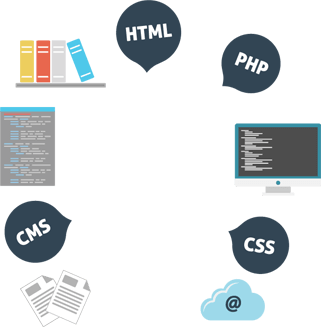
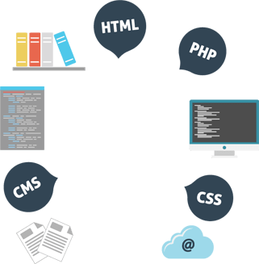

Quien soy
Profesional creativo con iniciativa y resolutivo. Perfil altamente cualificado con grandes aptitudes comunicativas y analíticas. Durante mi experiencia profesional he asumido distintas responsabilidades en la toma de decisiones, aportando conocimientos y generando nuevas ideas orientadas a optimizar nuevos proyectos y procesos de puesta en marcha. Siempre abierto a nuevos retos donde mi background profesional aporten un valor añadido a los distintos proyectos dónde pueda involucrarme.
 
